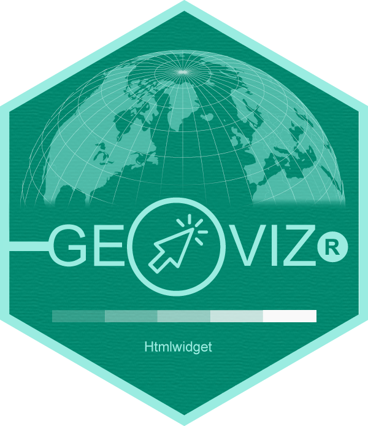
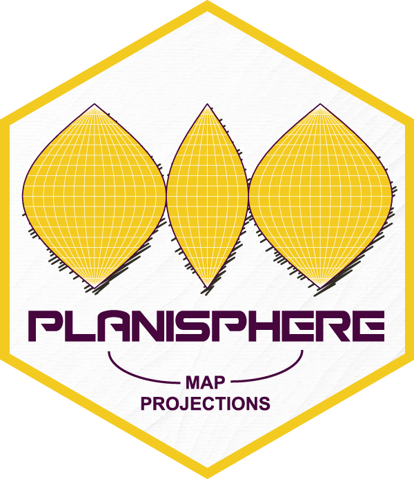

Nicolas Lambert
Last R packages

geovizr is an R package for thematic mapping. It's an R wrapper around the geoviz JavaScript library, itself based on the d3.js ecosystem. Like the original javascript library, the package can be used to create a wide range of interactive, zoomable vector maps, taking advantage of d3's many features: proportional symbols, pictograms, typologies, choropleth maps, spikes, tiles, Dorling cartograms, etc. It can also be used to create pretty static vectorial maps in SVG format, suitable for editorial cartography.

planisphere is an R package that provides access to a wide range of map projections. It allows spatial data frames containing geographic coordinates (latitude/longitude) to be projected. Projection calculations are performed using spherical geometry rather than ellipsoidal geodetic models.
See also
Mapepetrud (experimental) is an R package that allows to make extruded maps from sf objects (polygons or multipolygons).
Flowmapper (experimental) fow maps in R.